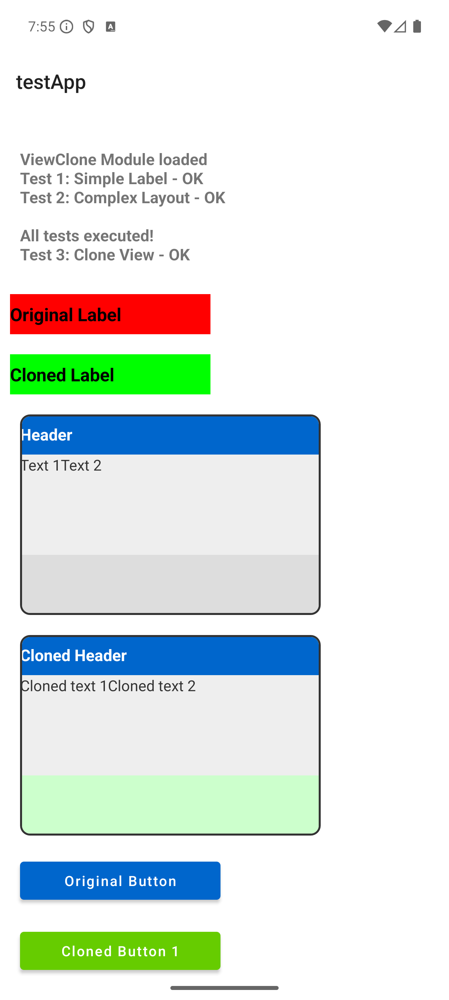
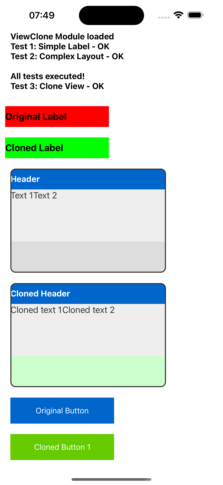

The ViewClone module enables efficient deep cloning of Titanium UI Views with recursive copying of all child views and properties. Cloning happens natively on the Java (Android) or Objective-C (iOS) layer for maximum performance.
Unlike the SDK's built-in clone mechanism, which shares the same JavaScript wrapper between original and clone, ViewClone creates a truly independent clone with its own JavaScript identity.
To use the module in JavaScript:
javascript
import viewclone from 'de.marcbender.viewclone';
// or
var viewclone = require('de.marcbender.viewclone');
Clones a TiViewProxy instance with all properties and child views. Child views are cloned recursively.
| Name | Type | Description | |------|------|-------------| | view | TiViewProxy | The view proxy to clone |
TiViewProxy — A new independent view proxy, or null if cloning fails.
apiName) — the clone is the same Ti.UI type as the original`javascript
const originalView = Ti.UI.createView({
backgroundColor: 'red',
width: 100,
height: 100
});
const clonedView = viewclone.cloneView(originalView);
clonedView.backgroundColor = 'blue';
win.add(clonedView);
`
`javascript
// Create a complex layout with child views
const container = Ti.UI.createView({
layout: 'vertical',
backgroundColor: '#eee',
width: 300,
height: 200
});
const header = Ti.UI.createLabel({ text: 'Header', backgroundColor: '#0066cc', color: '#fff', width: Ti.UI.FILL, height: 40 });
const content = Ti.UI.createLabel({ text: 'Content', color: '#333', width: Ti.UI.FILL, height: Ti.UI.FILL });
container.add(header); container.add(content); win.add(container);
// Clone the entire layout const clonedContainer = viewclone.cloneView(container); clonedContainer.top = 250;
// Access cloned children via the .children property const children = clonedContainer.children; if (children && children.length > 0) { children[0].text = 'Cloned Header'; }
win.add(clonedContainer);
`
`javascript
import viewclone from 'de.marcbender.viewclone';
const original = Ti.UI.createLabel({ text: 'Hello World', color: '#000', font: { fontSize: 16 } });
const clone = viewclone.cloneView(original);
clone.text = 'Cloned Text';
`
The module automatically clones all child views recursively:
`javascript
const parent = Ti.UI.createView({
layout: 'vertical'
});
const child1 = Ti.UI.createLabel({ text: 'Child 1' }); const child2 = Ti.UI.createLabel({ text: 'Child 2' });
parent.add(child1); parent.add(child2);
// Cloning also clones child1 and child2
const clonedParent = viewclone.cloneView(parent);
`
Event listeners are not cloned. Add your own listeners to the clone after cloning:
`javascript
const button = Ti.UI.createButton({ title: 'Click me' });
button.addEventListener('click', function(e) { console.log('Original clicked'); });
const clonedButton = viewclone.cloneView(button);
// Add a new listener to the clone
clonedButton.addEventListener('click', function(e) {
console.log('Cloned clicked');
});
`
Use the .children property to access child views of a cloned view. Do not use .getChildren() — it is not available on cloned views because children is exposed as a JavaScript property via @Kroll.getProperty, not as a callable method.
`javascript
const clonedView = viewclone.cloneView(parentView);
// Correct const children = clonedView.children;
// Incorrect — not available on cloned views
const children = clonedView.getChildren();
`
Properties like rect and size may return zero values immediately after cloning. The native view is created lazily when the proxy is added to a visible window. Actual values are populated once the view is rendered.


Marc Bender
Apache Public License